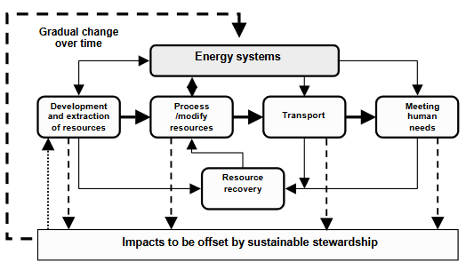
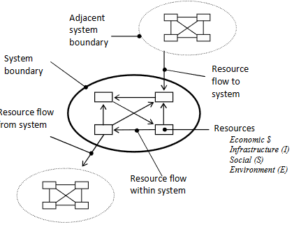
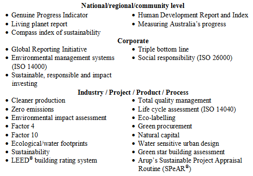
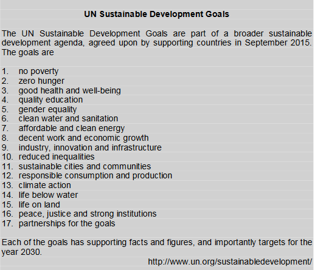
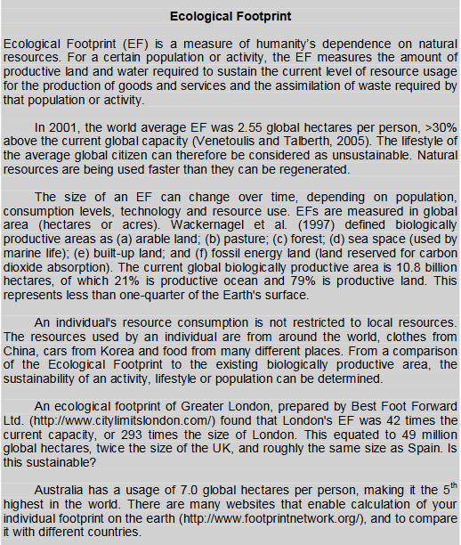
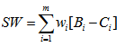

This week we look at how sustainability, environmental and social considerations inform the planning and design of engineering projects. The concept of sustainability and its assessment can be used as a basis for the assessment of development and community projects. Community values are incorporated into decision making processes by placing an emphasis on the environmental and social implications of engineering projects.
| Engineering Ethics | Engineering Ethics: Public Health, Safety, and Welfare |
| Sustainability | Sustainability and Resilience in Our Engineered World |
| Environmental Problems | 10 Major Current Environmental Problems |
| George Carlin on The Environment (explicit - an alternative viewpoint) |
Assignment 1 - The Design of a Battery for Hybrid/Electric Cars
Assignment 2 - Software Defined Network Traffic System
Prior to the 1970s, engineering projects were often human-centric. Engineers focused primarily on the technical and economic aspects of projects, without giving much concern to the social and environmental impacts of their work. To a large extent this was a reflection of the priorities of society at the time, and to a lesser extent, due to an insufficient understanding of the interconnectedness between engineering works and natural and social systems. Engineers now recognise that they play a critical role in the wise use, conservation and management of resources. They also recognise that they have an obligation to ensure that the needs of future generations are considered. This is reflected by professional bodies through accreditation requirements for engineering programs, and through codes of ethics for practising engineers.
Much has been done in my lifetime to improve the environment around us. Can you list three improvement in yours?
The systems approach provides a simple and consistent basis for investigating sustainability at all levels of society, from the global scale down to the individual. Gilman (1992) used systems concepts to provide the following definition of sustainability:
The ability of a society, ecosystem, or any such ongoing system to continue functioning into the indefinite future without being forced into decline through exhaustion or overloading of key resources on which the system depends.
Will we eventually exhaust our fossil fuels?
Based on this definition, Foley et al. (2003) have shown that to achieve sustainability it is necessary to manage appropriately all the resources that a system relies on. These include the natural, the financial, the social and the man-made infrastructure resources that are important to the functioning of the system.
Roberts (1990) has shown that self-sustaining systems in nature are generally closed-loop systems that evolved gradually over time. In the past when humans developed production systems, they have relied on an open loop, once-through use of resources, which results in much waste. To be sustainable, it is necessary to use closed-loop systems.
Does nuclear power fit this picture?
A conceptual model that can be used to assess the sustainability of a system or of sustainable system development (Foley et al., 2003) is shown in the following figure. It outlines the flow of resources within the system. The model identifies infrastructure and other human-made resources (I) as a key element of sustainability. Infrastructure for urban development includes buildings, and the water supply system, as well as systems for waste, transport and energy. Such a systems approach provides a good platform for assessing development and sustainability, where infrastructure and resource flow are principal considerations.
Does solar power fit this picture?
Looking ahead by two generations, does anti-matter fit this picture? See the following article from July 29, 2021:
Collisions of light produce matter/antimatter from pure energy.
Each subsystem within the larger development system can be modelled (e.g. a single house within a city development). The flow of resources such as water, energy and finance to and from the system can also be included in a more holistic way than in many other currently available tools.
Another application of the term sustainability relates to corporate social responsibility. This can impact engineers and their work through both the strategic direction and the investment decisions of the organisations within which they are employed or interact. Sustainability has been adopted in the business world to connote the principles of social and environmental responsibility. Increasingly business organisations have recognized that profits alone do not guarantee continuity of existence for their companies and that sustainability adds to their long- term business viability. Investors also see sustainability issues, such as controlling greenhouse gases, as priority concerns to be addressed by management.
What is the main purpose of a corporation?
What happens if corporate social responsibility were left to corporations? Would we have any
responsibility? Should governments interfere?
The final application of the term sustainability, as discussed here, relates to considerations of natural capital. Schmidheiny (1992) of the World Business Council on Sustainable Development suggested that population growth and economic development will eventually be constrained by environmental and social pressures.
Time is a key consideration for sustainability as systems evolve and communities develop. In evaluating the sustainability of engineering systems, projects, processes and operations, a key aspect to consider is the stream of resource usage. Various tools can assist in such evaluations, and are dependent on the level of society to which they are being applied. Examples of readily available tools available on the Internet are listed in the following table.
In 1992, the first set of guiding principles emphasizing sustainable development, Agenda 21, were agreed to at the Earth Summit in Rio de Janeiro. In 2000, eight Millennium Development Goals were declared, and in 2015 countries adopted 17 Sustainable Development Goals. These principles and goals are not an assessment of sustainability in their own right. They inform assessments and provide direction.
Is there a difference between quality of life and economic standard of living?
The USA has a higher average personal wealth per capita than Canada, but has a lower median personal wealth per capita than Canada.
How is that possible?
Sustainability assessment can and should be applied to evaluating proposed and existing processes and projects at all levels of governmental and project decision making. Incorporating sustainability through the design and implementation phases of a development could involve the integration of social and environmental effects of a longer time horizon into analyses by the proponents of projects. Sustainability assessment requires defining clear societal goals (e.g. the Sustainable Development Goals) which can be translated into criteria, against which assessment is conducted. It is essential that the assessment method is able to discern sustainable outcomes from unsustainable ones.
Consider BitCoin. Mining uses a tremendous amount of energy. See the article:
How Much Energy Does Bitcoin Actually Consume?
Is BitCoin sustainable as more people participate?
While it is true that the environment and sustainability have become much more of a focus for concern among people since the 1970s, it would be quite wrong to think that prior to that time there were no problems and concerns. In ancient Greece some 2500 years ago, Plato lamented the consequences of excessive logging and grazing in the mountainous region of Attica, near Athens. Similar concerns were raised around 1000 years ago in Japan where excessive eroded granite built up in Lake Biwa, due to logging for the construction of a temple (Parker, 1999).
The tragedy of the commons has played itself out worldwide at various times and to varying degrees. It can be explained as follows: when a group of herdsmen have access to a common pasture, it is in each individual's best interests to increase the size of their herd without reference to the overall carrying capacity of the land. However, this leads to the destruction of the common pasture, so that everyone loses. This type of situation occurs in many ways, such as when an increasing population results in increased waste disposal into the commons: rivers, lakes, oceans, and atmosphere.
A major issue in city development involves the concept of the commons in regard to the decreasing quality of air and water due to emissions from transport systems and runoff from road systems. Another issue linked to the commons on a global scale is the consumption of energy by the developed nations which has resulted in producing CO2 emissions which have contributed to global warming. Those activities that are considered to be necessary for a high quality of life: food; energy and transport systems; communication systems; the supply of infrastructure; supply and maintenance of water and waste water systems; health systems; and the management of waste all need energy and hence generate CO2 emissions.
Energy use in developing nations is based on traditional systems of wood and coal, and not electricity. As these nations convert to electricity and develop industries that use more energy, there will be a major increase in CO2 production across the globe. The growth in energy use of the developing nations is only just beginning and can be expected to increase twenty fold in the next 20-30 years. The need to develop better technologies for the sustainability of cities and lower CO2 emissions are two goals which engineers need to address if there is to be equity among nations.
Are there any countries that still use coal?
The environmental impact statement usually includes social impacts as well as effects on the physical and biological components of the environment. If a full economic, environmental and social evaluation of a project is carried out, it is most important to avoid the double-counting of benefits or costs under more than one account. If, for example, an economic value is placed on lives saved through accident reduction and this is included in the economic evaluation of the project, it would not be appropriate to also highlight the number of lives saved in the social evaluation. The following types of social effects may need to be considered for a particular project:
Countries with the highest income per capita are not necessarily the countries that offer the best quality of life. What are some of the
aspects of a high quality of life?
In theory it is possible for a government to redistribute the benefits and costs of any public sector project among the various individuals or groups in society. This being the case, it can be argued that the role of the engineer or planner is to devise projects which maximise the total net benefits to the community and let the government decide how these benefits (and costs) will be distributed. However, this redistribution of benefits and costs is often not practicable because of the difficulties in identifying all affected groups and because of the administrative cost of carrying out the transfers. Redistribution of the benefits of engineering projects rarely occurs in practice.
Socialism vs Capitalism, which is better?
It is therefore important that the distributional consequences of any major project be explicitly considered. Of particular relevance is the effect of the project on the income levels of certain target groups. These target groups may be distinguished on the basis of income (e.g. those living below the poverty level), race, sex, or geographic region.
It has been suggested by Weisbrod (1972) that the distributional question can be approached by placing explicit weights on the benefits and costs received by each group in the community. Traditional benefit-cost analysis gives the same weight to a dollar of benefits received by a pauper and by a millionaire. It is conceptually possible to give a higher weight to benefits or costs incurred by low-income earners and thus develop a single index of social welfare, using the following formula:
where SW is the index of social welfare; Bi is the present value of benefits received by group i; Ci is the present v alue of costs incurred by group i; wi is the “social” weight of benefits or costs to group i; and m is total number of community groups. The difficulties of deciding on a set of weights and implementing this approach should be apparent.
It has been argued that the redistribution of population throughout a region or the nation may be a major objective of government policy. This is particularly true in sparsely populated nations such as Australia. Major engineering projects in remote areas may contribute positively to the decentralization of population. The benefits of decentralization are related to enhanced national security and the benefits of rural versus urban living.
How did the Canadian government effect population redistribution to the western provinces in the 19th century?
One of the benefits cited by governments when new public works are announced is the effect that it will have on unemployment. A large engineering project may involve considerable employment in the implementation phase and also in the operations phase. Some people consider this an achievement in itself.
Many engineering works contribute to saving lives, improving health, or increasing safety in the community. Typical examples are flood mitigation works, water treatment plants, sewage treatment, improved road alignments, grade separation, and coastal protection works.
How has software engineering improved the life, health and safety of people?
It has already been stated that the distribution of income, and in particular to certain disadvantaged groups, is an important social effect. Similarly the distribution of educational, cultural, and recreational opportunities among regions and socio-economic groups may be an important consideration in evaluating a major project. Educational and cultural values may be enhanced by engineering projects providing improved access to sites of historical, archaeological, or scientific interest.
An extremely important facet of undertaking any project analysis involves the participation of interested stakeholders. This is an area where many engineers will be called on to manage and participate with specialists who work in the social assessment area.
In undertaking a pipeline project, which groups should be consulted with?
Stakeholder analysis is an entry point to Social Impact Assessment (SIA) and participatory work. It addresses strategic questions, e.g. Who are the key stakeholders? What are their interests in the project or policy? What are the power differentials between them? What relative influence do they have on the operation? This information helps to identify institutions and relationships which, if ignored, can have negative influence on proposals or, if considered, can be built upon to strengthen them.
In undertaking a speech-to-text conversion project, which stakeholders should be consulted with?
The participatory approach aims to ascertain local knowledge and actions. It uses group exercises to enable stakeholders to share information and to develop plans. These techniques have been employed successfully in a variety of settings to enable local people to work together to plan community-appropriate developments.
In undertaking a well-creation project for a small village in South America, which stakeholders should be consulted with?